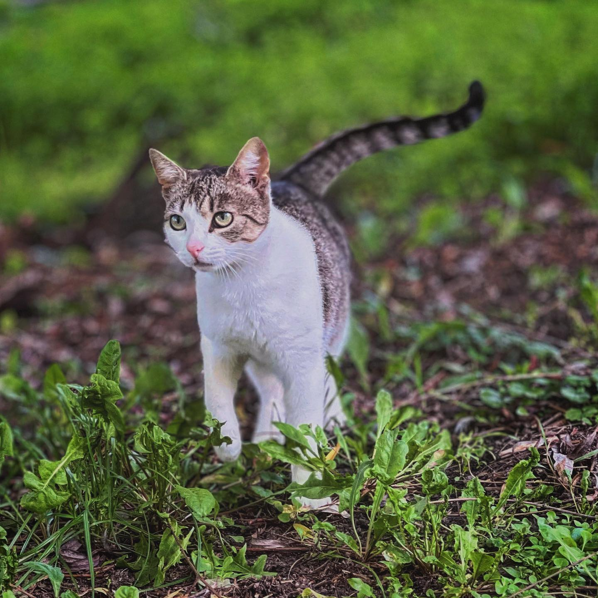
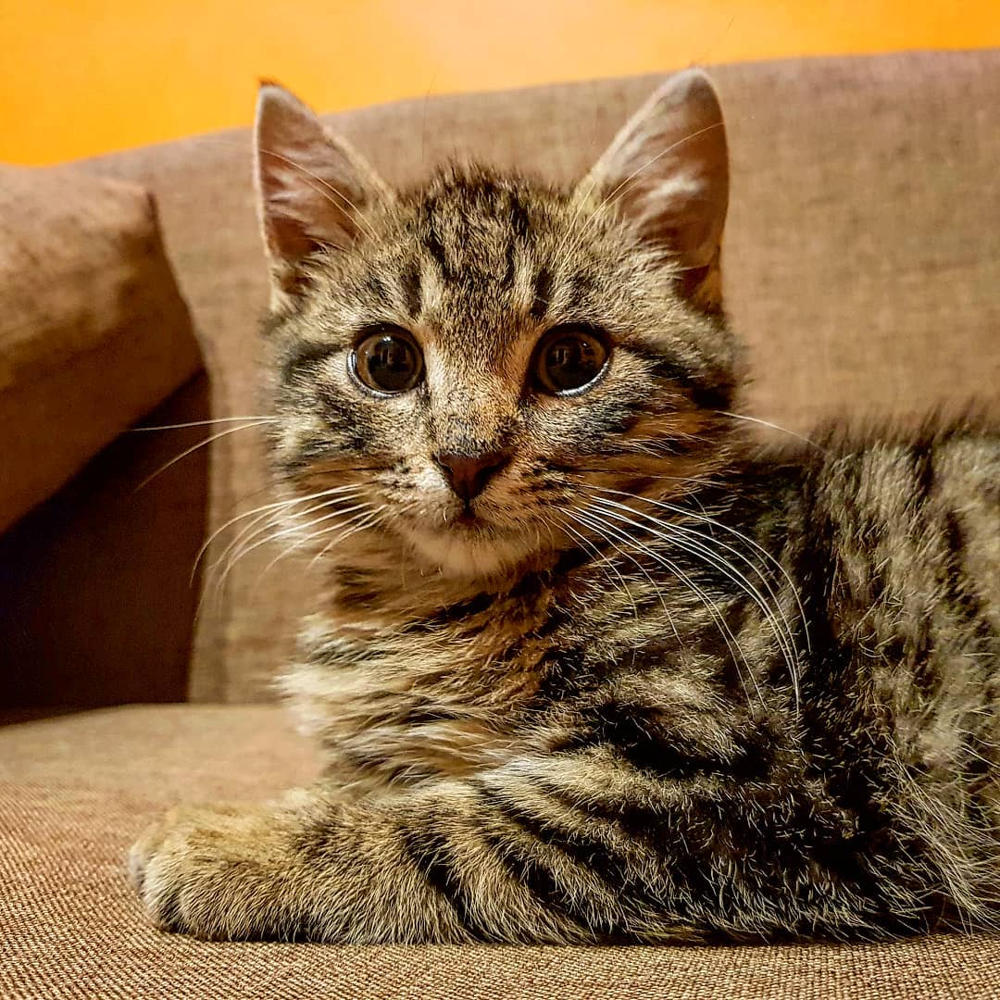
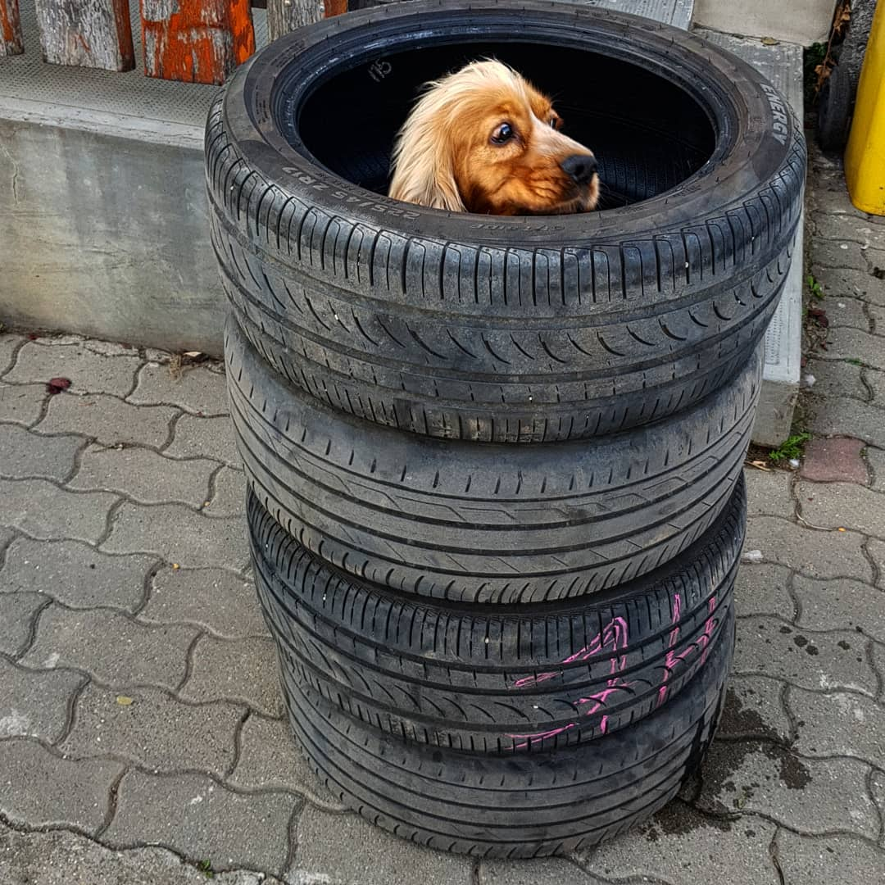
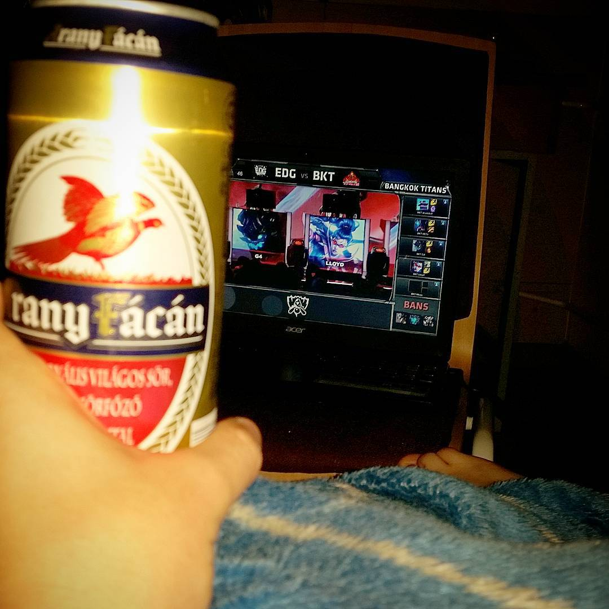

Kedvenceink
Tita

Tita egy nagyon aranyos cicus, bundáját fehér és cirmos textúra keveréke színezi. Nagyon szelíd, kedves, barátságos cica. Szobatiszta.
Kedvenc ételei:
Kedvenc ételei:
- Grillcsirke
- Tonhal
- Bárányos macskatáp
- Whiskas (nem fizetett hirdetés)
Szalonna
Szalonna egy igazán belevaló cica, ha játékról van szó, ő mindid benne van. Pörgős, szeretetteljes, aktív cicus, Szobatiszta.
Kedvenc ételei:
Kedvenc ételei:
- Májpástétom
- Tej (laktózmentes!)
- Egeres macskatáp a Tescoból
- Whiskas (talán mégis fizetett hirdetés)

Egyéb kedvenceink

"Hülye kutya"
"Giccses szarvas"
